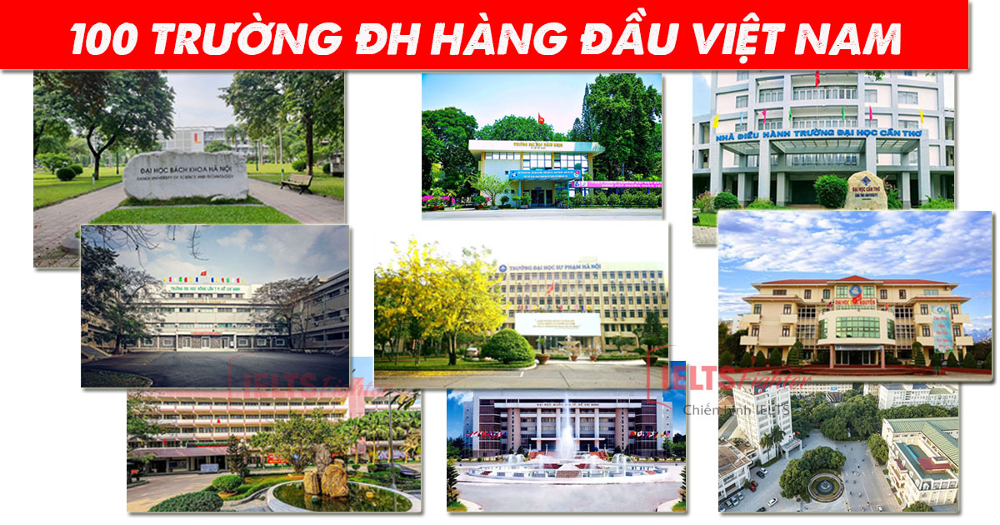

Khái niệm
Là một tổ chức giáo dục lớn, bao gồm nhiều trường thành viên (còn gọi là trường đại học trực thuộc). Ví dụ: Đại học Quốc gia Hà Nội, Đại học Huế, Đại học Đà Nẵng — đây là các "đại học" gồm nhiều trường trực thuộc. Mỗi trường thành viên đào tạo chuyên sâu một lĩnh vực (ví dụ: Trường Đại học Y, Trường Đại học Kinh tế...). (TOP 100 trường vào năm 2024)
Một số đại học - cao đẳng và trường đại học nổi bật khác ở Việt Nam
Tài nguyên học tập
🎓 1. Trường Đại học Kinh tế – ĐHQGHN(UEB)
🎓 2. Đại học Bách khoa Hà Nội(HUST)
🎓 3. Đại học Quốc gia TP.HCM (VNU-HCM)
Khám phá thêm🎯 BÍ QUYẾT ĐỖ ĐẠI HỌC – TỪ NGƯỜI ĐI TRƯỚC
🌱 1. Xác định mục tiêu rõ ràng từ sớm “Không có gió thuận chiều nào cho con tàu không biết mình đi đâu.” Chọn ngành học phù hợp với sở thích, năng lực và định hướng nghề nghiệp. Tìm hiểu các trường đại học uy tín đào tạo ngành đó, điểm chuẩn, tổ hợp môn xét tuyển. Viết ra mục tiêu cụ thể (ví dụ: “Đỗ ngành Công nghệ thông tin – Đại học Bách khoa Hà Nội, tổ hợp A00, điểm mục tiêu 27+”). 📝 Lời khuyên: Hãy treo mục tiêu ở nơi dễ thấy – trước bàn học, sổ tay, điện thoại – để nhắc nhở bản thân mỗi ngày.
🧠 2. Ôn luyện có chiến lược – không phải học "cày bừa"
🔹 Phân bổ thời gian hợp lý theo năng lực:
Chia môn học theo 3 nhóm: Mạnh – Trung bình – Yếu.
Đầu tư thời gian cho môn yếu hơn, nhưng vẫn duy trì luyện tập đều cả 3 môn/tổ hợp.
🔹 Lập kế hoạch ôn tập chi tiết: Kế hoạch tháng → tuần → ngày. Xen kẽ giữa học mới và ôn lại. Cuối mỗi tuần nên có 1 buổi tổng kết kiến thức và làm đề luyện tập.
📚 3. Chọn tài liệu học và đề thi chuẩn
SGK vẫn là nền tảng cơ bản. Đừng bỏ qua.
Sách tham khảo uy tín: Chọn sách đã được đánh giá cao, được nhiều giáo viên khuyên dùng.
Đề thi thử chất lượng: Ưu tiên đề của các trường chuyên, sở GD-ĐT các tỉnh thành, hoặc các trung tâm luyện thi uy tín.
💡 Mẹo: Tự làm đề trong điều kiện thi thật – giới hạn thời gian, không mở sách – để tăng phản xạ và giảm áp lực tâm lý.
🧘 4. Giữ tinh thần ổn định – yếu tố then chốt Nhiều học sinh học rất tốt nhưng trượt chỉ vì tâm lý! Hãy học cách hít thở sâu, thiền nhẹ, hoặc tập thể dục để giảm stress. Tự tin vào bản thân – không so sánh với người khác. "Thi đại học là chạy marathon, không phải chạy nước rút."
🤝 5. Tận dụng sự giúp đỡ Hỏi thầy cô, bạn bè, hoặc tìm nhóm học tập cùng tiến. Tham gia các hội nhóm online về ôn thi đại học để chia sẻ kinh nghiệm và cập nhật kiến thức mới.
🕒 6. Không đợi “nước đến chân mới nhảy” Đừng chủ quan, dù là học sinh giỏi. Hãy bắt đầu ôn tập ít nhất 6-8 tháng trước kỳ thi để có thời gian làm chủ kiến thức và rèn kỹ năng.
🔥 7. Luyện đề cận ngày thi – tăng tốc nhưng không quá sức Giai đoạn 1-2 tháng cuối, tập trung luyện đề, rà soát những “bẫy” thường gặp. Học cách phân bổ thời gian làm bài thi hợp lý, ưu tiên làm câu chắc chắn trước. Lưu ý về mẹo tránh mất điểm: tô đúng mã đề, điền đúng thông tin, không để sót câu.
❤️ 8. Giữ sức khỏe và chế độ sinh hoạt khoa học Ngủ đủ (ít nhất 6-7 tiếng/ngày). Ăn uống đầy đủ dinh dưỡng, tránh học quá khuya làm giảm khả năng ghi nhớ. Tránh xa mạng xã hội khi học – sử dụng ứng dụng chặn thông báo hoặc đặt giờ nghỉ cố định.
🏁 Kết luận: Thành công đến từ sự kiên trì và chiến lược đúng đắn Đỗ đại học không chỉ là “thi đỗ” mà còn là bước khởi đầu cho hành trình dài phía trước. Hãy bắt đầu từ hôm nay, kiên trì từng ngày, và tin rằng bạn xứng đáng đạt được điều mình nỗ lực!
Lựa chọn khác
🎓 1. Học nghề: Nếu bạn không muốn học đại học, có thể chọn học nghề tại các trường dạy nghề hoặc trung cấp nghề. Đây là lựa chọn tốt cho những ai muốn nhanh chóng có việc làm.
🎓 2. Du học: Nếu bạn có khả năng tài chính và muốn trải nghiệm môi trường học tập quốc tế, du học là một lựa chọn tuyệt vời.
🎓 3. Khởi nghiệp: Nếu bạn có ý tưởng kinh doanh và muốn thử sức, khởi nghiệp có thể là con đường thú vị.
🎓 4. Nghỉ ngơi: Đôi khi, nghỉ ngơi và tìm hiểu bản thân cũng là một lựa chọn tốt. Bạn có thể tham gia các khóa học ngắn hạn, tình nguyện hoặc đi du lịch để mở rộng tầm nhìn.
🎓 5. Tìm kiếm việc làm: Nếu bạn không muốn học tiếp, có thể tìm kiếm việc làm ngay sau khi tốt nghiệp. Nhiều công ty hiện nay không yêu cầu bằng cấp mà chỉ cần kỹ năng và kinh nghiệm.
Liên hệ
Chúng tôi rất vui khi nhận được ý kiến đóng góp từ bạn. Hãy để lại thông tin của bạn bên dưới và chúng tôi sẽ liên hệ lại sớm nhất có thể.